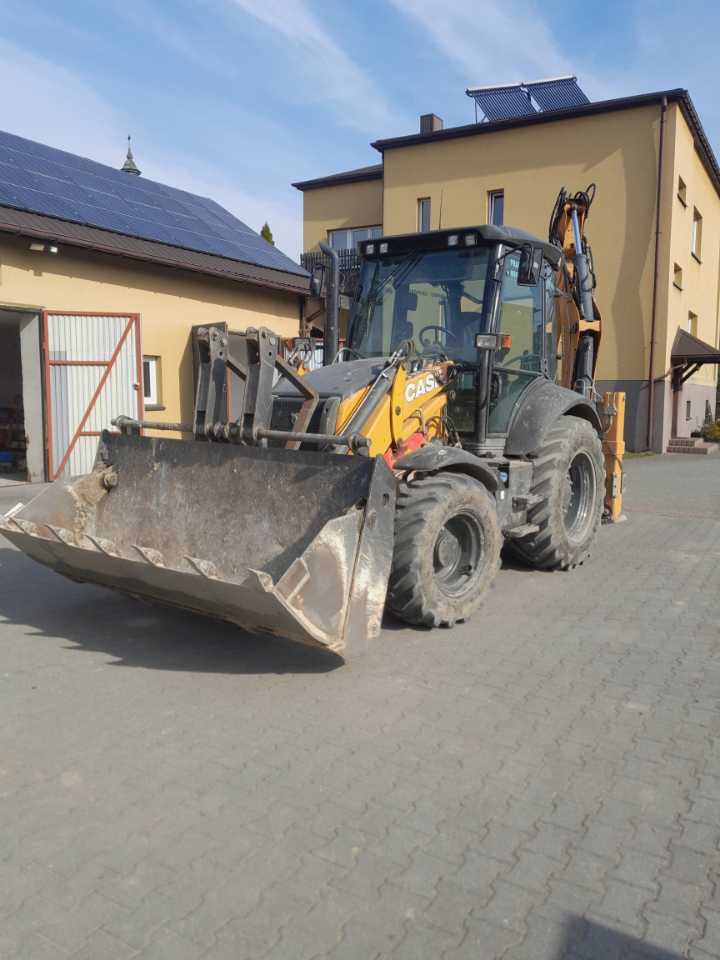
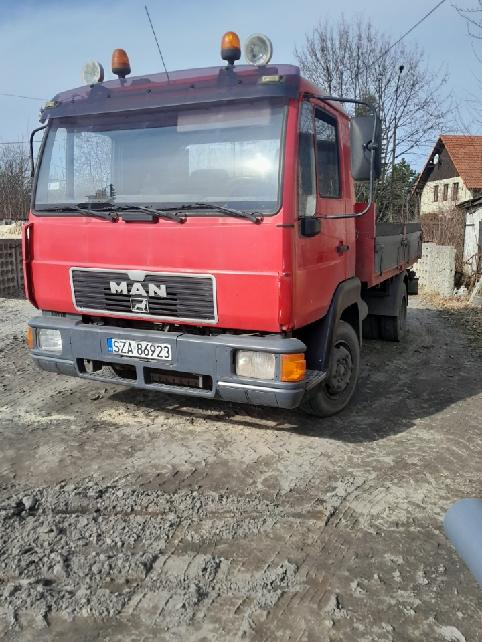
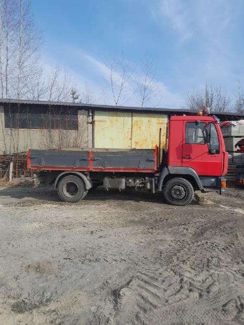
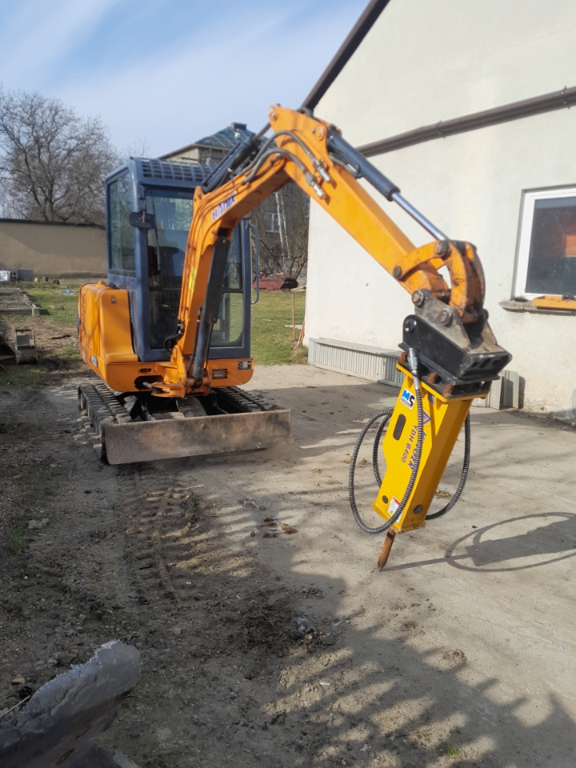
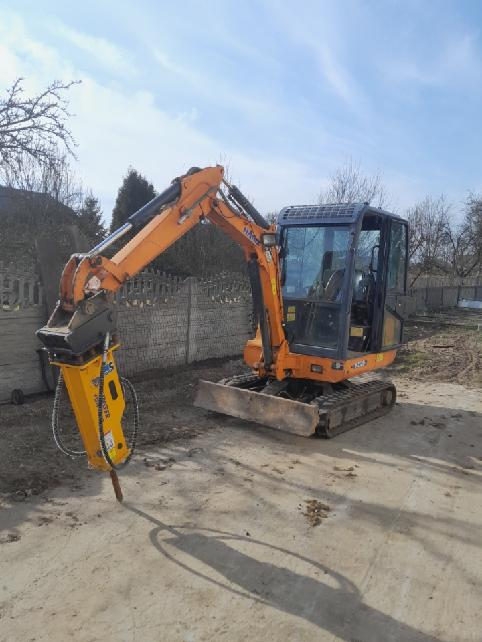
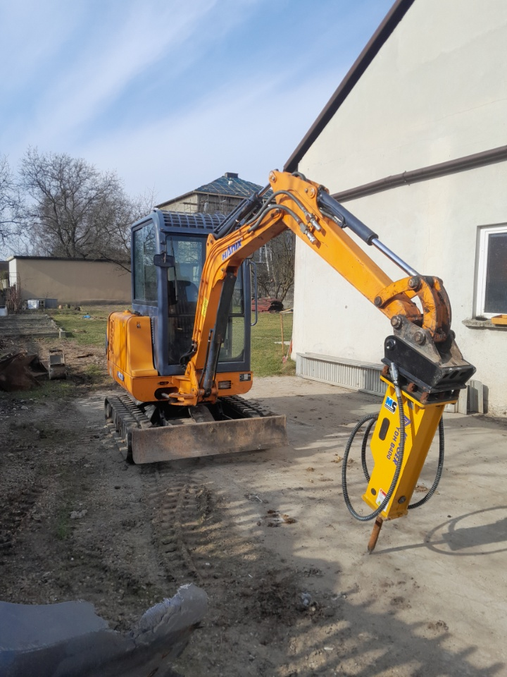
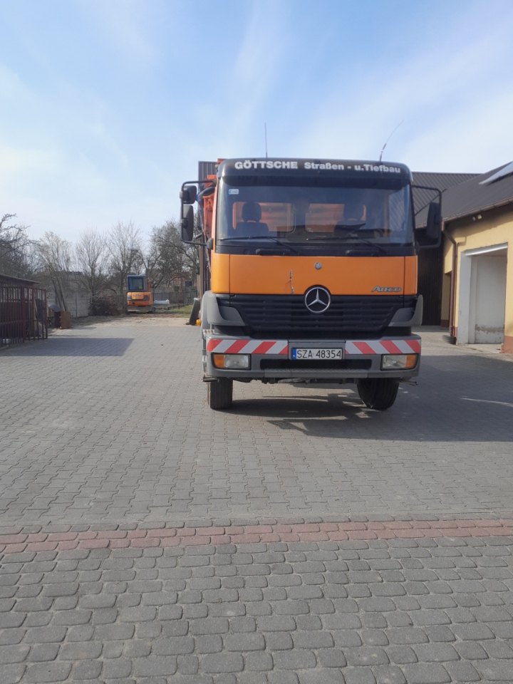
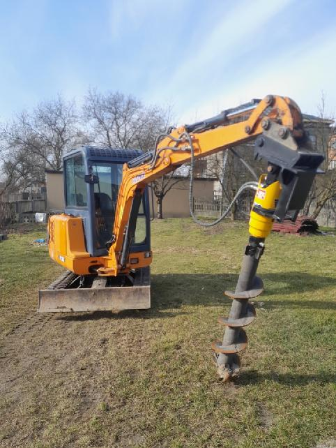
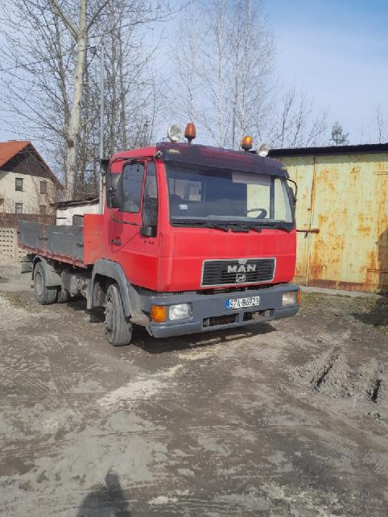
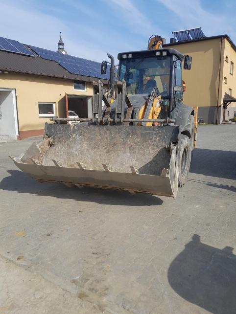

★★★★★
Po skończonej zleconej pracy można spokojnie polecić usługi pana Sylwestra – polecam.
Kompleksowe prace ziemne, wykopy, transport piasku i kruszyw. Baza w Niegowonicach. Dojeżdzamy głównie do Łaz, Ogrodzieńca i okolicznych miejscowości.
ZadzwońRealizujemy usługi koparko-ładowarką oraz minikoparką w zakresie kompleksowych prac ziemnych i transportowych. Najczęściej pomagamy przy budowie domów, garaży, podjazdów oraz uzbrajaniu działek w Niegowonicach, Grabowej, Łazach i Chechle.
Wykopy pod kanalizację, fundamenty, niwelacje terenu oraz inne roboty ziemne. W praktyce są to m.in. wykopy pod ławy fundamentowe, szamba, przyłącza wodno‑kanalizacyjne oraz przygotowanie wykopów pod ogrodzenia i murki oporowe.
Usługi młotem wyburzeniowym – rozbiórki, kruszenie betonu i skał. Rozbijamy stare fundamenty, płyty betonowe, posadzki, schody i inne elementy, dzięki czemu łatwiej przygotować teren pod nową inwestycję lub wyrównać działkę.
Wiercenia w ziemi – słupy, fundamenty, odwierty. Wykonujemy otwory pod słupy ogrodzeniowe, fundamenty pod wiaty i garaże, maszty oświetleniowe oraz inne elementy wymagające stabilnego posadowienia.
Transport samochodem samowyładowczym: piasek, żwir, kruszywa, materiały budowlane. Dowozimy materiał pod zasypki, podsypki i utwardzenia podjazdów, a także wywozimy nadmiar ziemi, gruzu i innych urobków z wykopów z terenu Twojej działki.
Dysponujemy nowoczesnym parkiem maszynowym. Wszystko, czego potrzebujesz do prac ziemnych i transportu.

580ST Extendahoe – wykopy, roboty ziemne

Z wiertnicą hydrauliczną i młotem wyburzeniowym

Transport piasku, żwiru i kruszyw

Płyty wibracyjne – utwardzanie terenu
















Siedziba firmy: Niegowonice. Zobacz też dedykowaną podstronę: usługi koparką w Niegowonicach.
Standardowo działamy w promieniu ok. 10 km od Niegowonic – głównie w Niegowonicach/Niegowoniczkach, Łazach, Ogrodzieńcu, Zawierciu i najbliższych miejscowościach.
Najczęściej dojeżdżamy do: Niegowonic, Grabowy, Łaz, Ciągowic, Chruszczobrodu, Klucz, Dąbrowy Górniczej, Ogrodzieńca oraz okolicznych miejscowości.
Przy zleceniach poza tym obszarem (dalej niż ok. 10 km) prace wykonujemy po indywidualnym uzgodnieniu dodatkowej opłaty za dojazd.
Podstrony lokalne: Łazy, Dąbrowa Górnicza, Chechło, Grabowa, Rokitno Szlacheckie, Chruszczobród, Klucze, Ogrodzieniec, Ciągowice.
Tak – wykonujemy prace ziemne w Niegowonicach i okolicznych miejscowościach.
Tak, dojeżdżamy do Ogrodzieńca, Dąbrowy Górniczej, Ciągowic, Chechła, Rokitna Szlacheckiego, Chruszczobród, Klucz, Zawiercia i okolicznych miejscowości.
Działamy w promieniu do 10 km od Niegowonic. Jeśli nie jesteś pewien, czy znajdujesz się w naszym zasięgu – zadzwoń i dopytaj się. Chętnie potwierdzimy możliwość dojazdu i wycenimy usługę.
Klienci oceniają nas w Google Maps. Poniżej podsumowanie i wybrane cytaty — pełną listę zobaczysz w wizytówce.
/ 5 · 8 opinii
Po skończonej zleconej pracy można spokojnie polecić usługi pana Sylwestra – polecam.
Pełen profesjonalizm! Usługa wykonana sprawnie, terminowo i zgodnie z ustaleniami. Operator bardzo doświadczony, widać, że zna się na rzeczy i dba o detale. Szczerze polecam każdemu, kto szuka rzetelnego wykonawcy robót ziemnych. Polecam Pana Sylwestra!
Polecam w 100%! Wszystko ogarnięte szybko, sprawnie i bez zbędnego gadania 👌 Pan Sylwester solidnie i sprawnie wykonuje swoją pracę, ma dobre podejście i potrafi doradzić, jeśli jesteś w kropce.
Największa zaleta → jest bardzo precyzyjny i dokładny! ✨
Potrzebujesz koparko-ładowarki, wykopów lub transportu materiałów w Niegowonicach lub w promieniu ok. 10 km? Zadzwoń!
Usługi transportowo-sprzętowe
Snopek Sylwester
ul. Kościuszki 24, 42-454 Niegowonice
Niegowonice, Grabowa, Łazy, Ogrodzieniec, i okolica (standardowy zasięg ok. 10 km)